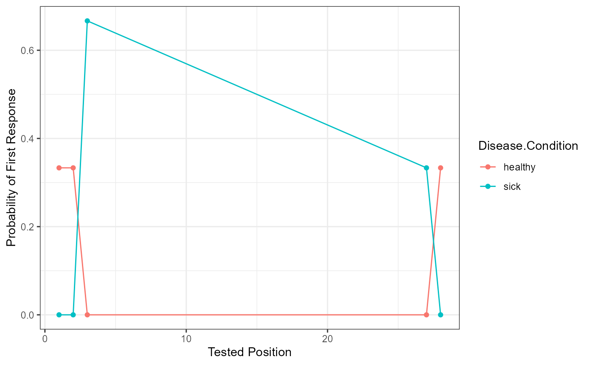

Free_Recall.RmdPlease see manuscript for a long description of the following data. We will load the example data, and you can use the ? with the dataset name to learn more about the data.
library(lrd)
#>
#> Attaching package: 'lrd'
#> The following object is masked from 'package:base':
#>
#> kappa
data("wide_data")
head(wide_data)
#> Sub.ID
#> 1 1
#> 2 2
#> 3 3
#> 4 4
#> 5 5
#> 6 6
#> Response
#> 1 basket, chair, clothes, flowrs, glasses, fan, windows, carpet, lamp, picture frame, remote
#> 2 windows, bed, books, shelf, pictures
#> 3 bacpack, chair, glasses, mirror, iphone, pillow, stereo, nightstand, computer, door, magazines, quilt
#> 4 vase, blinds, computer, magazine, books, bed, blanket, carpet, dresser
#> 5 bed, blankets, closet, windows, books, fan
#> 6 bed, blankets, dreser, nightstand, end table, stereo, flwrs, vase
#> Disease.Condition
#> 1 healthy
#> 2 healthy
#> 3 healthy
#> 4 sick
#> 5 sick
#> 6 sick
#?wide_data
data("answer_key_free")
head(answer_key_free)
#> Answer_Key
#> 1 backpack
#> 2 basket
#> 3 bed
#> 4 blanket
#> 5 blinds
#> 6 books
#?answer_key_free
library(ggplot2)
DF_long <- arrange_data(data = wide_data,
responses = "Response",
sep = ",",
id = "Sub.ID")
head(DF_long)
#> Sub.ID response position Disease.Condition
#> 1 1 basket 1 healthy
#> 2 1 chair 2 healthy
#> 3 1 clothes 3 healthy
#> 4 1 flowrs 4 healthy
#> 5 1 glasses 5 healthy
#> 6 1 fan 6 healthyScoring in lrd is case sensitive, so we will use tolower() to lower case all correct answers and participant answers.
You should define the following:
free_output <- prop_correct_free(data = DF_long,
responses = "response",
key = answer_key_free$Answer_Key,
id = "Sub.ID",
cutoff = 1,
flag = TRUE,
group.by = "Disease.Condition")
str(free_output)
#> List of 3
#> $ DF_Scored :'data.frame': 51 obs. of 6 variables:
#> ..$ Responses : chr [1:51] "bacpack" "basket" "bed" "bed" ...
#> ..$ Sub.ID : num [1:51] 3 1 2 4 5 6 4 6 5 4 ...
#> ..$ position : num [1:51] 1 1 2 6 1 1 7 2 2 2 ...
#> ..$ Disease.Condition: chr [1:51] "healthy" "healthy" "healthy" "sick" ...
#> ..$ Answer : chr [1:51] "backpack" "basket" "bed" "bed" ...
#> ..$ Scored : num [1:51] 1 1 1 1 1 1 1 1 1 1 ...
#> $ DF_Participant:'data.frame': 6 obs. of 5 variables:
#> ..$ Disease.Condition : chr [1:6] "healthy" "healthy" "healthy" "sick" ...
#> ..$ Sub.ID : num [1:6] 1 2 3 4 5 6
#> ..$ Proportion.Correct : num [1:6] 0.393 0.143 0.393 0.321 0.214 ...
#> ..$ Z.Score.Group : num [1:6] 0.577 -1.155 0.577 1.155 -0.577 ...
#> ..$ Z.Score.Participant: num [1:6, 1] 1.082 -1.31 1.082 0.399 -0.626 ...
#> .. ..- attr(*, "scaled:center")= num 0.28
#> .. ..- attr(*, "scaled:scale")= num 0.105
#> $ DF_Group :'data.frame': 2 obs. of 4 variables:
#> ..$ Disease.Condition: chr [1:2] "healthy" "sick"
#> ..$ Mean : num [1:2] 0.31 0.25
#> ..$ SD : num [1:2] 0.1443 0.0619
#> ..$ N : int [1:2] 3 3We can use DF_Scored to see the original dataframe with our new scored column - also to check if our answer key and participant answers matched up correctly! The DF_Participant can be used to view a participant level summary of the data. Last, if a grouping variable is used, we can use DF_Group to see that output.
#Overall
free_output$DF_Scored
#> Responses Sub.ID position Disease.Condition Answer Scored
#> 1 bacpack 3 1 healthy backpack 1
#> 2 basket 1 1 healthy basket 1
#> 3 bed 2 2 healthy bed 1
#> 4 bed 4 6 sick bed 1
#> 5 bed 5 1 sick bed 1
#> 6 bed 6 1 sick bed 1
#> 7 blanket 4 7 sick blanket 1
#> 8 blankets 6 2 sick blanket 1
#> 9 blankets 5 2 sick blanket 1
#> 10 blinds 4 2 sick blinds 1
#> 11 books 5 5 sick books 1
#> 12 books 2 3 healthy books 1
#> 13 books 4 5 sick books 1
#> 14 carpet 1 8 healthy carpet 1
#> 15 carpet 4 8 sick carpet 1
#> 16 chair 1 2 healthy chair 1
#> 17 chair 3 2 healthy chair 1
#> 18 closet 5 3 sick closet 1
#> 19 clothes 1 3 healthy clothes 1
#> 20 computer 3 9 healthy computer 1
#> 21 computer 4 3 sick computer 1
#> 22 door 3 10 healthy door 1
#> 23 dreser 6 3 sick dresser 1
#> 24 dresser 4 9 sick dresser 1
#> 25 end table 6 5 sick <NA> 0
#> 26 fan 1 6 healthy fan 1
#> 27 fan 5 6 sick fan 1
#> 28 flowrs 1 4 healthy flowers 1
#> 29 flwrs 6 7 sick <NA> 0
#> 30 glasses 3 3 healthy glasses 1
#> 31 glasses 1 5 healthy glasses 1
#> 32 iphone 3 5 healthy <NA> 0
#> 33 lamp 1 9 healthy lamp 1
#> 34 magazine 4 4 sick magazines 1
#> 35 magazines 3 11 healthy magazines 1
#> 36 mirror 3 4 healthy mirror 1
#> 37 nightstand 6 4 sick nightstand 1
#> 38 nightstand 3 8 healthy nightstand 1
#> 39 picture frame 1 10 healthy picture frame 1
#> 40 pictures 2 5 healthy <NA> 0
#> 41 pillow 3 6 healthy pillow 1
#> 42 quilt 3 12 healthy quilt 1
#> 43 remote 1 11 healthy remote 1
#> 44 shelf 2 4 healthy shelf 1
#> 45 stereo 3 7 healthy stereo 1
#> 46 stereo 6 6 sick stereo 1
#> 47 vase 6 8 sick vase 1
#> 48 vase 4 1 sick vase 1
#> 49 windows 2 1 healthy windows 1
#> 50 windows 1 7 healthy windows 1
#> 51 windows 5 4 sick windows 1
#Participant
free_output$DF_Participant
#> Disease.Condition Sub.ID Proportion.Correct Z.Score.Group Z.Score.Participant
#> 1 healthy 1 0.3928571 0.5773503 1.0819232
#> 2 healthy 2 0.1428571 -1.1547005 -1.3096965
#> 3 healthy 3 0.3928571 0.5773503 1.0819232
#> 4 sick 4 0.3214286 1.1547005 0.3986033
#> 5 sick 5 0.2142857 -0.5773503 -0.6263766
#> 6 sick 6 0.2142857 -0.5773503 -0.6263766
#Group
free_output$DF_Group
#> Disease.Condition Mean SD N
#> 1 healthy 0.3095238 0.14433757 3
#> 2 sick 0.2500000 0.06185896 3This function prepares the data for a serial position curve analysis or visualization. Please note, it assumes you are using the output from above, but any output with these columns would work fine. The arguments are roughly the same as the overall scoring function. We’ve also included some ggplot2 code as an example to help show how you might use our output for plotting. These graphs aren’t too exciting with a small example!
serial_output <- serial_position(data = free_output$DF_Scored,
key = answer_key_free$Answer_Key,
position = "position",
scored = "Scored",
answer = "Answer",
group.by = "Disease.Condition")
head(serial_output)
#> Disease.Condition Tested.Position Freq Proportion.Correct SE
#> 1 healthy 1 1 0.3333333 0.2721655
#> 2 healthy 2 1 0.3333333 0.2721655
#> 3 healthy 3 1 0.3333333 0.2721655
#> 4 sick 3 0 0.0000000 0.0000000
#> 5 sick 4 0 0.0000000 0.0000000
#> 6 sick 5 0 0.0000000 0.0000000
ggplot(serial_output, aes(Tested.Position, Proportion.Correct, color = Disease.Condition)) +
geom_line() +
geom_point() +
xlab("Tested Position") +
ylab("Probability of First Response") +
theme_bw() Conditional response probability is the likelihood of answers given the current answer set. Therefore, the column participant_lags represents the lag between the written and tested position (e.g., chair was listed second, which represents a lag of -6 from spot number 8 on the answer key list). The column Freq represents the frequency of the lags between listed and shown position, while the Possible.Freq column indicates the number of times that frequency could occur given each answer listed (e.g., given the current answer, a tally of the possible lags that could still occur). The CRP column calculates the conditional response probability, or the frequency column divided by the possible frequencies of lags.
crp_output <- crp(data = free_output$DF_Scored,
key = answer_key_free$Answer_Key,
position = "position",
scored = "Scored",
answer = "Answer",
id = "Sub.ID")
head(crp_output)
#> Sub.ID participant_lags Freq Possible.Freq Disease.Condition CRP
#> 1 1 -27 0 0 healthy 0
#> 2 1 -26 0 0 healthy 0
#> 3 1 -25 0 0 healthy 0
#> 4 1 -24 0 0 healthy 0
#> 5 1 -23 0 0 healthy 0
#> 6 1 -22 0 0 healthy 0
crp_output$participant_lags <- as.numeric(as.character(crp_output$participant_lags))
ggplot(crp_output, aes(participant_lags, CRP, color = Disease.Condition)) +
geom_line() +
geom_point() +
xlab("Lag Distance") +
ylab("Conditional Response Probability") +
theme_bw()Participant answers are first filtered for their first response, and these are matched to the original order on the answer key list (Tested.Position). Then the frequency (Freq) of each of those answers is tallied and divided by the number of participants overall or by group if the group.by argument is included (pfr).
pfr_output <- pfr(data = free_output$DF_Scored,
key = answer_key_free$Answer_Key,
position = "position",
scored = "Scored",
answer = "Answer",
id = "Sub.ID",
group.by = "Disease.Condition")
head(pfr_output)
#> Tested.Position Disease.Condition Freq pfr
#> 1 1 healthy 1 0.3333333
#> 2 2 healthy 1 0.3333333
#> 3 3 healthy 0 0.0000000
#> 4 27 healthy 0 0.0000000
#> 5 28 healthy 1 0.3333333
#> 6 1 sick 0 0.0000000
pfr_output$Tested.Position <- as.numeric(as.character(pfr_output$Tested.Position))
ggplot(pfr_output, aes(Tested.Position, pfr, color = Disease.Condition)) +
geom_line() +
geom_point() +
xlab("Tested Position") +
ylab("Probability of First Response") +
theme_bw()